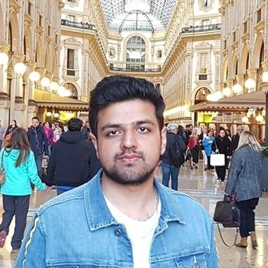

|  |
Abdullah TariqGraduate Riser Analyst at Aquaterra Energy Limited I had completed a BEng in Mechanical Engineering from the University of Exeter back in 2018 and then went onto complete an MSc in Mechanical Engineering from University College London in 2019. I joined Aquaterra Energy in Jan 2020 as a Graduate Riser Analyst and current I am on rotation in the Marine Risers Department. |
University College London
University of Exeter
| Aquaterra Energy Limited | Jan 2020-Current |
| Hurley Palmers Flatt | September 2018 |
| Atkins | July 2014 |
| IT and Data Analysis | Proficient in the use of standard Microsoft Office packages | ⭐⭐ |
| CAD | Solidworks and AutoCAD | ⭐⭐⭐ |
| Simulation | Fluid flow and stress simulation using ANSYS Fluent/FEA/APDL,CFD ACE+, ICEM CFD.
| ⭐⭐⭐⭐ |
| Project Managment | Project Planning, Engineering Budgeting, Scheduling and Cost Estimation | ⭐⭐ |
| Control Systems and Programming | Simulink,MATLAB and Mathcad | ⭐⭐ |
| Language | English,Urdu and Panjabi | ⭐⭐ |